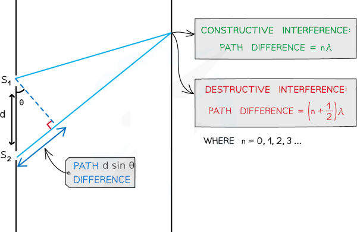

Young Experiment
In 1801 the English scientist Thomas Young (1773–1829) performed a historic experiment that demonstrated the wave nature of light by showing that two overlapping light waves can interfere with each other. His experiment was particularly important because he was also able to determine the wavelength of the light from his measurements, the fi rst such determination of this important property.
Consideriamo un'onda elettromagnetica che passa attraverso diversi schermi durante il suo percorso. Quando la luce passa attraverso le aperture presenti nello schermo, queste agiscono come nuove sorgenti di onde, secondo il principio di Huygen. L'onda generata presso S1 e quella generata presso S2 per raggiungere il punto d sullo schermo F, percorrono distanze differenti, chiamiamole S1P e S2P.
Bright fringes on the screen correspond to constructive interference. The path difference Δl is given by:
d sin θ = nλ
n = 0, ±1, ±2,…
al variare di θ si ha alternanza tra interferenza costruttiva che si osserva come massima intensità luminosa sullo schermo, e interferenza distruttiva presenza di buio sullo schermo. Tale disposizione di frange scure e chiare alternate prende il nome di figura di diffrazione.
Dalla discussione fatta sull'ipotesi di De Broglie non dovrebbe sorprendere che tale figura di diffrazione si osserva anche effettuando tale esperimento con particelle come elettroni e protoni. L'esperimento della doppia fenditura con gli elettroni venne effettura per la prima volta nel 1927 da Clinton Davisson e Lester Germer presso i Bell Labs.
Effettuando l'esperimento ad intensità bassissime, tali da inviare una particella alla volta ed utilizzando un rilevatore, è possibile identificare l'arrivo della particella su un punto preciso dello schermo. A basse esposizioni le particelle sembrano arrivare a caso. A lunghe esposizioni si incomincia a intravedere un pattern, che sfocia nella figura di diffrazione già osservata per le onde.

Affinchè possa essere avvenuta l'interferenza la particella deve essere passata da entrambe le aperture e aver interferito con se stessa, fatto spiegabile considerando la particella come un'onda.
Proviamo adesso a lasciare una fenditura chiusa. La figura di diffrazione in questo caso non si osserva più, ma si ha una distribuzione maggiore di particelle in prossimità della fenditura aperta, come si osserverebbe con particelle macroscopiche:
Proviamo a modificare l'esperimento disponendo un rivelatore presso ciascuna apertura per capire da dove passi la particella. Riusciamo in questo modo a capire presso quale apertura passa la particella lungo il suo cammino. Il fatto interessante è che con il rilevatore accesso non si osserva nessuna figura di diffrazione. Se lo si spegne la figura di diffrazione riappare!. E' come se ciascuna particella si comportasse come un'onda fatta eccezzione di quando la si prova ad osservare, nel cui caso il comportamento è quello di una particella. In questo modo si giustifica il carattere duale onda-particella testè accennato.
Invece di porre il rilevatore subito dietro l'apertura